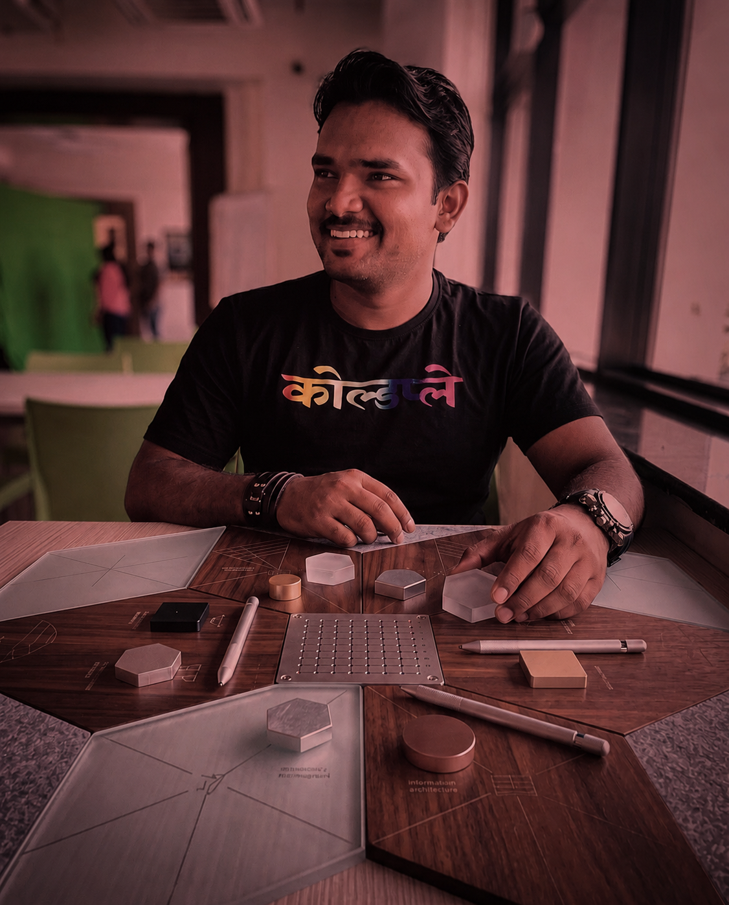

UX Lead designing for a world where interfaces increasingly include AI agents, not just screens. My focus is orchestration and steerability — how a system hands off between automation and a human, how confidence gets communicated, and where a person needs a clear way back into control.
That rigor comes from an unusual place: 11+ years of QA engineering underneath the design practice. It's shaped work for Snapchat, Microsoft, Bet365, Bajaj Motors, and PlugShare — plus an independent, AI-augmented product, Mareflo, built solo.

I design UX for a shifting frontier: products where an AI agent is part of the experience, not just a backend feature. That means thinking hard about orchestration — how steps and tools hand off cleanly — and steerability — how a person can redirect, correct, or override the system without losing trust in it.
11+ years of QA engineering sits underneath that practice, which is where the instinct for edge cases comes from — but the lens I lead with is UX. That's shaped work across Snapchat, Microsoft (SharePoint/WEX), Bet365, Bajaj Motors, and PlugShare, with earlier roles at Expleo Group and Paperlite.io. I'm currently a UX Lead working remotely with Testlio from Pune, India.
Four projects, four different pressures: a product I own end to end, a platform balancing two opposing user needs, a dense information-architecture problem, and an audit built to actually get used. Each one is a different angle on the same practice.
An original dual-slider reaction pattern, replacing the binary like/dislike. Built solo, end to end.
Two age groups, two opposing challenges — one revamp built to responsibly serve both.
A bento-box, information-dense redesign inspired by Chinese e-commerce interfaces.
25 usability issues, surfaced and prioritized — built to be acted on, not filed away.
Critical UX insight with empathy at the core of every decision — not an add-on, the foundation. I map flows around what a real person is actually trying to get done, then design for the moments where that breaks down.
Designing how a system hands off between automation and a person — confidence thresholds, fallback states, and a clear way for someone to redirect or override the agent without losing trust in it.
ISTQB-certified rigor sits underneath the design work — structured enough to catch what a demo walkthrough won't, in service of the UX rather than separate from it.
This is the actual interaction pattern from Mareflo. Drag both sliders — one for what you're feeling, one for how much.